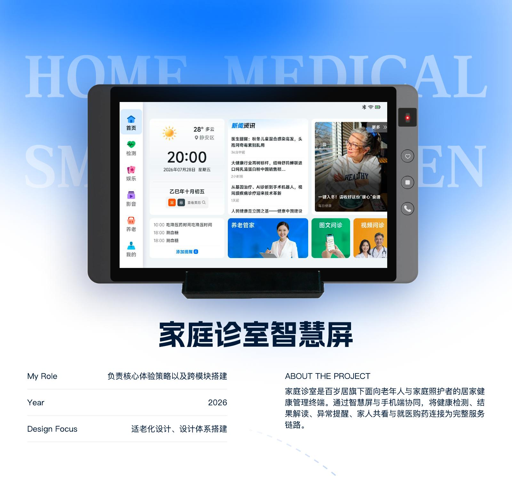
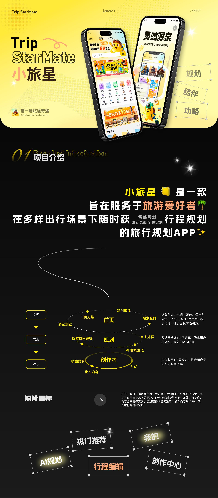
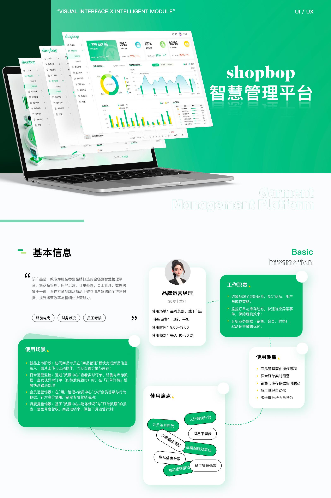

01 / 核心案例
家庭诊室智慧屏
面向老年人与家庭照护者的居家健康管理终端，连接健康检测、结果解读、异常提醒、家人共看与医疗商城。
91.2%检测任务完成率
79.66%月活跃率
20.2%商城转化率
SELECTED WORK
三个项目分别代表适老化产品、C 端体验和复杂 B 端业务，也是这份作品集的主要叙事。

面向老年人与家庭照护者的居家健康管理终端，连接健康检测、结果解读、异常提醒、家人共看与医疗商城。

用 AI 规划、内容推荐和协同编辑，降低年轻用户从寻找灵感到完成行程的成本。

整合商品、订单、会员、员工与财务数据，让零售运营人员更快定位问题并完成日常管理。
CASE STUDY SYSTEM
正式版中，每个核心项目都沿用同一套叙事骨架，帮助读者快速判断背景、职责、过程与结果。
产品、用户、平台、时间与个人职责。
业务目标、用户痛点与原流程问题。
信息架构、体验原则与关键设计判断。
按任务链路展示流程和重点界面。
规范、组件、图标与跨端适配。
业务数据、协作效率与后续方向。
CAPABILITIES
需求梳理、用户研究、信息架构、交互原型与体验迭代。
移动端、PC、大屏、H5、品牌官网及运营活动视觉。
视觉规范、组件库、跨端适配和开发走查验收。
辅助洞察分析、创意探索、视觉生成与设计流程提效。
MORE WORK
作为中型案例或视觉合集出现，保持网站节奏，不与核心项目争夺注意力。
数据可视化
数据可视化
品牌网站
探索项目
视觉合集
网页设计
ABOUT
我关注的不只是页面是否好看，更关注信息是否清楚、操作是否顺畅，以及方案能否在产品和研发协作中真正落地。
负责多端 UI/UX、商城迭代、适老化设计规范与组件库建设。
负责 App、PC、数据大屏及运营活动的全流程设计与体验优化。
CONTACT